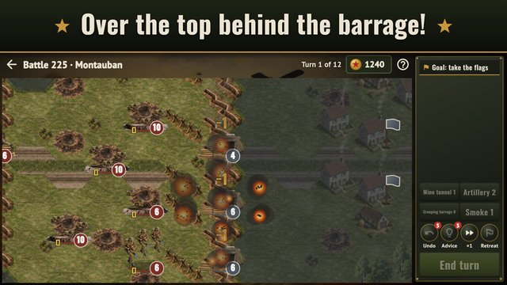

Trench Front
Dawn, a whistle, and the company climbs out of the trench into no-man's-land. Ahead lie wire and machine guns, behind you your guns' creeping barrage.
Trench Front is a turn-based strategy game of the First World War, 1914–1918: trenches, artillery, gas, the first tanks and cavalry. Choose on the staff map which region to take next. At HQ gather your units and prepare the attack, but remember that a long preparation hurries the enemy reserves. In battle lead your units across the hexes: sappers cut gaps in the wire, the infantry follows the barrage, and a captured trench must be held against the counter-attack.

- Three campaigns: Russia, from Gumbinnen and Galicia through the Carpathians, the Great Retreat and Erzurum to the Brusilov offensive; France, from the Marne through Verdun, the Somme and the Chemin des Dames to the Armistice of 11 November; Britain, from Mons and Ypres through Gallipoli, the Somme, Passchendaele and Cambrai to Amiens.
- 20 chapters, 160 battles and 41 counter-attacks on staff maps; 20 special historic battles with their own rules: Gumbinnen, Osowiec, Erzurum, Lutsk, the Marne taxis, Fort Vaux, Fort Douaumont, Gheluvelt, the Helles landing, Flers-Courcelette, Messines, Cambrai and more.
- Trench war: wire and sappers, dugouts, the creeping barrage, the machine gun in its trench, communication trenches, mines under the ridge, enemy gas attacks and gas masks, and a captured trench that faces the wrong way.
- 15 kinds of troops: infantry, storm groups, machine guns, bombers, flamethrowers, snipers, trench mortars, sappers, cavalry, cyclists, armoured cars, field guns, heavy howitzers and tanks; Britain and France have their own, Russia has none.
- Everything by the year of the war: red trousers and cavalry charges in 1914, gas and helmets in 1915, the first tanks in 1916, light Renaults and enemy storm troops in 1918.
- A front report before every battle: two or three lines of the true history of the place and the date.
- Weather and time of day: rain and mud, fog, snow, heat and night fights; three difficulty levels, where preparation counts for more than numbers.
- HQ between battles: veterans with ranks whom you know by name, and their letters home; a commander with a skill tree, medals and a weapons handbook.
- A daily operation with a week's archive, daily tasks and challenges in battles you have won.
- Music of the time: marches and suites of the 1890s to the 1910s; plays offline, in English and Russian.
No blood and no cruelty: just the history of the front. An optional reminder after a week away, off at any time in the settings. The whistle is at your lips, commander!